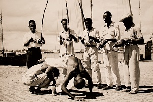

Muzika i instrumenti
Muzika je osnovni element kapuere – ona diktira brzinu i vrstu igre (jogo), određujući sve što se dešava unutar kruga (roda de capoeira) u kojem dvoje kapuerista razmenjuju tehnike kapuere, koriste akrobacije (floreio) i otkrivaju slabosti svog partnera.
Ritam daje niz instrumenata koji se naziva bateria i koji obično čine: tri berimbau-a, dva pandeiro-a, atabaque (bubanj), agogô i reco-reco . Raspored instrumenata varira od grupe do grupe.
Berimbau
Berimbau (berimbau) je jednožičani ritmički instrument poreklom iz Afrike. On je simbol kapuere i njen zaštitni znak. Zvuk proizvodi udarcem drvenog štapića (baqueta ili vaqueta) o žicu (arame) zategnutu od jednog do drugog kraja drveta. Najčešće je to drvo beriba, zbog svoje elastičnosti i izdržljivosti. Istovremeno sa štapićem koristi se zvečka ispunjena sitnim kamenčićima (caxixi), koja upotpunjuje zvuk berimbaua. Da bi zvuk berimbaua bio jasan i dubok neophodan je metalni novčić (dobrão) i rezonanca, odnosno izdubljena tikva (cabaça) koja je kanapom vezana za drvo (verga), od čijeg rastojanja do tikve takođe zavisi kvalitet zvuka. Zvuk se proizvodi prislanjanem novčića o žicu, čime se dobijaju različite visina tona, dok se menjajem položaja tikve u odnosu na telo dobijaju različite dubine. Ritam sekciju čine tri berimbaua:
- berimbau gunga (osnovni ritam)
- berimbau medio (osnovne varijacije osnovnog ritma)
- berimbau viola (potpuna improvizacija)
Uloga berimbaoa u kapueri je da vodi Rodu, odnosno komanduje dogadjajem, reprodukovanjem određenog ritma (ima ih više: angola, sao bento pequeno, sao bento grande de angola, regional, iuna, cavalaria, jogo de dentro, banguela, santa maria, idalina, amazonas, signo salomao), berimbao poručuje igračima na koji se način kapuera igra. Kapuera ritmovi se na berimbau dobijaju kombinacijom nekoliko osnovnih tonova. Prvobitno, kapuera se radila bez instrumenata, ne zna se tačan trenutak inkorporacije berimbaoa u kapueru, ali od 1850. godine instrumenti se pojavljuju u kapueri i danas je berimbao nezamenljiv instrument i često sinonim za nju.
Pandeiro
Smatra se da pandeiro (pandeiro) dolazi originalno iz istočne Afrike, ali imamo primere sličnog instrumenta i u Evropi i Arabiji. Smatra se kompletnim perkusionističkim instrumentom jer ima kompletan raspon tonova, niske , srednje i visoke tonove. Pravi se od drveta i pokriven je sa životinjskom kožom (neki se prave i sa zmijskom kožom), obično ima 5 ili 6 metalnih dodataka čija uloga je slična zvečki i upotpunjuju zvuk. Koristi se kao prateći instrument u raznim muzičkim žanrovima a jedan od najpoznatijih jeste Samba. U kapueri se koristi više ritmova koji se dobijaju na pandeiru, u zavisnosti od načina igre, gde postoji osnovni ritam i varijacije istog.
Atabaki
Atabaki (atabaque) je veliki bubanj koji se koristi u kapueri, najčešće se koristi koža od govečeta koja je sistemom konopaca, kočića i metalnih prstenova zategnuta preko vrha drvenog tela koje se često pravi od bureta.
Agogo
Agogo (agogô) je perkusionistički instrument koji se sastoji od dva metalna zvonceta gde se zvuk dobija udaranjem po površini sa metalnim štapićem ili prstima. Daje specifičnu boju i smek kapuera hodi. Takođe se koristi i u Makuleleu i sambi. Agogo se može napraviti i od drveta.
Kašiši
Kašiši (caxixi) je zvečka koja se drži u ruci sa kojom držimo vaketu, udaraljku sa kojom sviramo birimbao, pravi se od trske i unutra mogu da se nalaze kamenčići, suve bobice neke biljke ili školjkice. Iako možda ne deluje kao bitan faktor u izvođenju kapuera muzike, kašiši daje bitan doprinos atmosferi i celokupnom utisku koji proizvodi kapuera bateria.
Heko heko

Heko heko (reco-reco), koristi se isključivo u angola igrama. Nezaobilazni element kapuera muzike su pesme koje opisuju trenutnu situaciju u igri, daju savete igračima, pričaju priče iz prošlosti kapuere ili slave poznate ličnosti iz sveta kapuere. Tradicionalne pesme nemaju autorski pečat već su kolektivna tvorevina generacija kapuerista, ali današnji majstori svoje pesme potpisuju.
Ritmovi
Postoji dosta poznatih ritmova, ali se oni razlikuju od majstora do majstora i od škole do škole. Ritmovi grupe Senzala koje možete sresti u hodi (roda-označava kružni prostor u kojem se igra, ali se odnosi i na sve učesnike) su:
- Angola
- Sao Bento grande de Angola
- Sao Bento grande de Regional
- Jogo de dentro
- Iuna
Angola ritam varira od sporijeg ka bržem i upućuje na igru bližu zemlji, punu mimikrije i teatralnosti, rituala. Angola ritam, zajedno sa Samba de Roda, spada među najstarije ritmove. Obično se kombinuje u bateriji sa ritmovima Sao Bento Pequeno ili Benguela.
Sao Bento grande de Angola ritam vodi intenziviranju igre, koja postaje puna raskošnih udaraca uz dosta kretanja i akrobacija, ali i sa dosta kontakta. Uz njega se tapše u ritmu “palma de terreiro”.
Sao Bento grande de Regional ritam traži da igra bude brža, gotovo sasvim orijentisana na borbu, bez akrobacija, a sa dosta kontakta. Uz njega se tapše u ritmu “palma de treis”.
Jogo de dentro ritam odgovara kontinuiranoj igri, bez kontakta, na malom prostoru, i uz njega se ne tapše.
Iuna ritam predstavlja imitaciju dijaloga mužjaka i ženke istoimene ptice. Igra uz ovaj ritam je privilegija formiranog kapueriste, koji u njoj pokazuje visok tehnički nivo i dosta akrobatskih elemenata, bez kontakta. Ritam nije praćen ni tapšanjem, ni pevanjem.